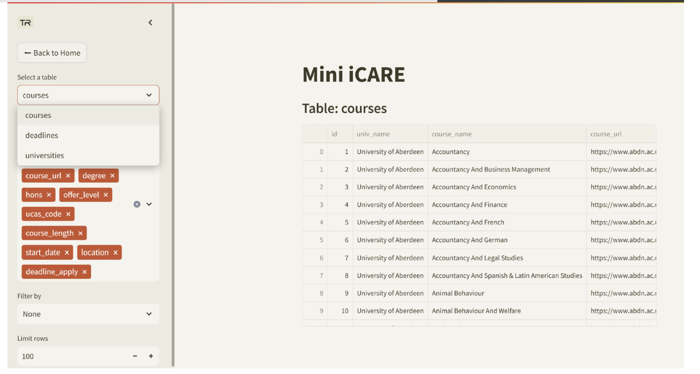
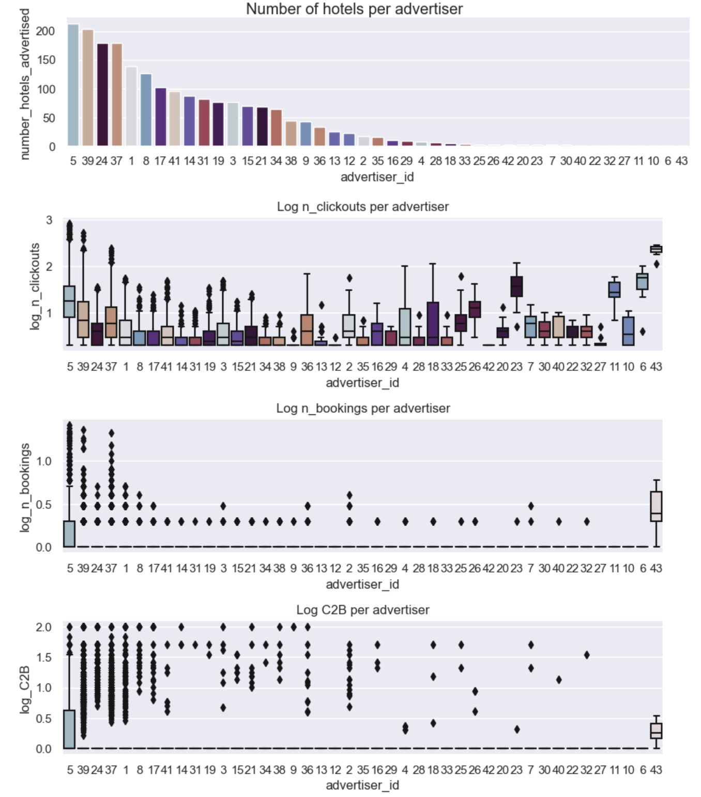
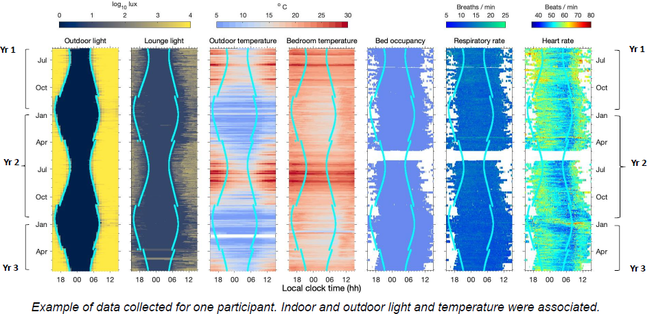
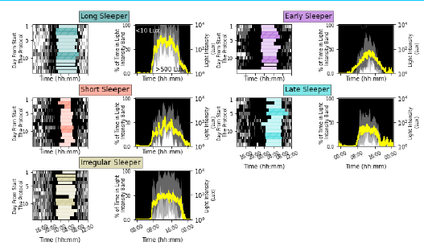
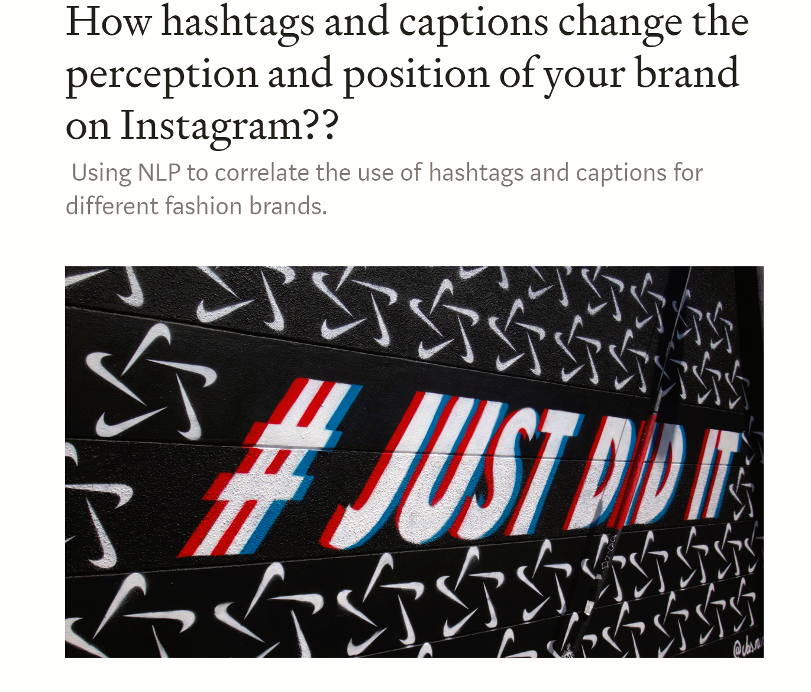
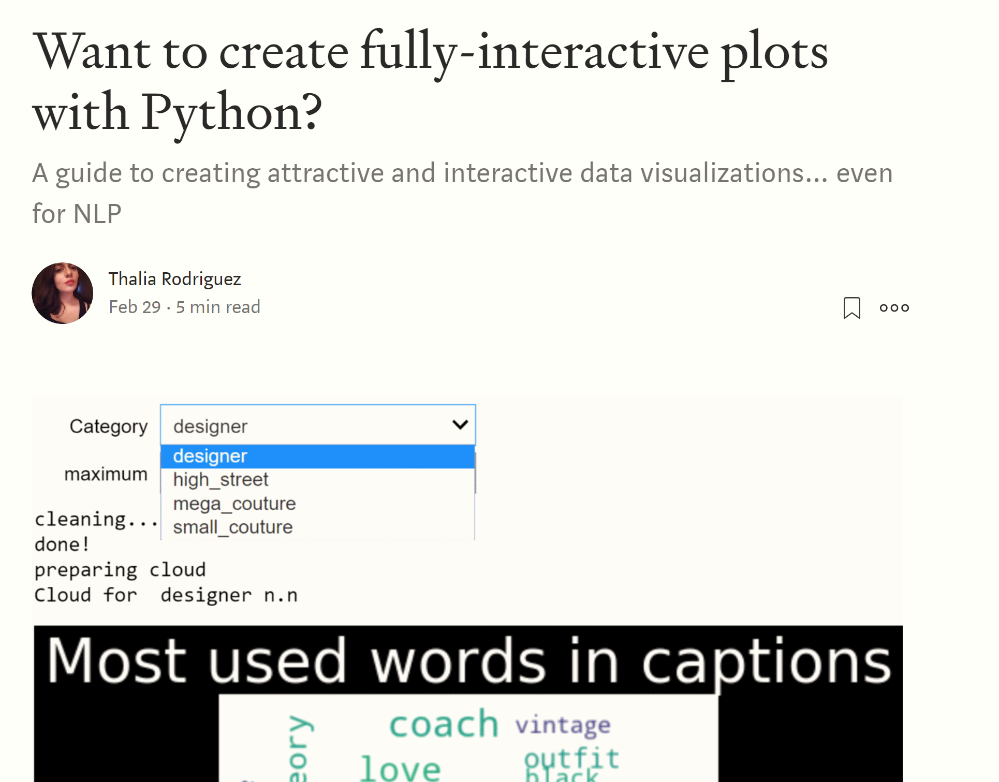
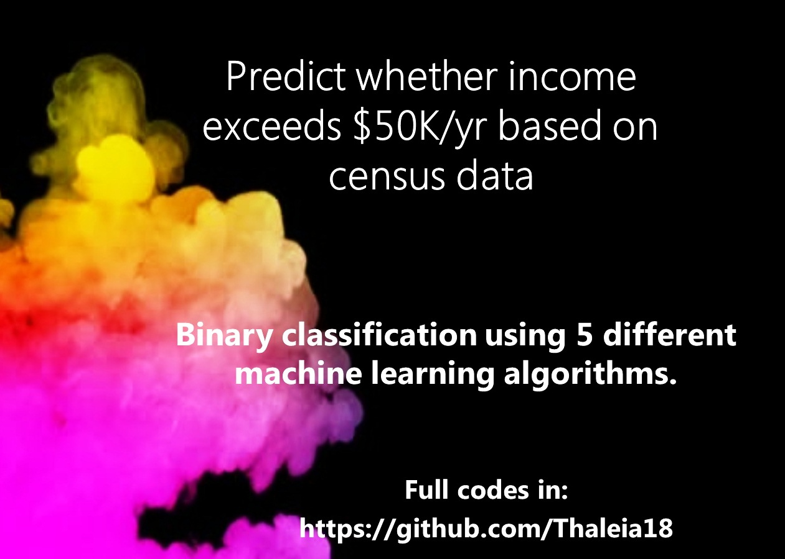

I am interested in using technology to improve people's lives, enhance business and create impact.
Over the past few years, I have focused on healthcare. However, I am curious about other topics as well. For example, in business school,
my favorite classes were Marketing and Finance. I enjoy reading about these subjects
and thinking about projects.
|
Mini iCare
A modular Python tool that automatically crawls university websites to extract and organize undergraduate admissions information into a searchable database with an interactive dashboard. No technical expertise required to explore the data. Features - Intelligent Web Crawler: Navigates from university homepages to undergraduate admissions pages and relevant subpages using heuristic rules - Comprehensive Data Extraction: Captures application deadlines, course lists, requirements, and scholarship information - SQLite Database: Structured storage with relational tables for universities, courses, and deadlines - Interactive Dashboard: Streamlit-based interface for filtering, sorting, and exploring data without writing SQL - URL Validation: Checks if universities are already in the database before scraping Architecture University URL → UniversityScraper → Extract Data → SQLite Database → Streamlit Dashboard For more info click here. |
August 2025  |
|
 |
July 2024
Predicting Hotel Booking Conversion Rates in Real Zero-Inflated Data: A Dual-Model Approach
Trivago is a meta-search website that enables advertisers to promote accommodations and allows users to compare different prices for the same accommodation. By aggregating offers from various booking sites, Trivago provides users with a comprehensive view of available options, helping them to make informed decisions and find the best deals. The task given was to create a model to predict conversion rates for hotel bookings across various advertising sites. This involved using the provided anonymized real data to make predictions for each advertiser-hotel combination for the specific date of August 11. The challenge was further compounded by the sparsity of data and the presence of zero-inflated data, as many advertiser-hotel combinations had no bookings at all. For more info click here. |
|
ThaliaGPT ThaliaGPT is a Streamlit-based app that streamlines interactions between Thalia Rodriguez and recruiters using OpenAI's advanced Large Language Models (LLMs) and personalized data. It offers an engaging chat experience, allowing users to ask questions about Thalia and receive accurate responses. Users can choose their contact method (Email or LinkedIn) and log their details. The app, deployed on an AWS EC2 instance, ensures scalable, reliable performance. This project demonstrates AI-driven chatbot capabilities and serves as a practical networking tool enhanced by personalized data ingestion. For more info click here. |
June 2024 |
| Older projects: | |
|
 |
How seasonal light and temperature affects sleep
In people living with dementia: • Measures of sleep and physiology varied with season. • The indoor light and temperature environment affected multiple aspects of sleep physiology, sleep timing, continuityand duration independent of season. Tuning indoor light and temperature maybe a pragmatic way to improve sleep in those living with dementia. For more info click here. |
|  |
Identifying drivers of sleep and circadian phenotypes
Within individuals, understanding the relative contributions of different driving factors will facilitate the design of effective, personalised interventions. For more info click here. |
| |
SmartGram App In the last years, influencer marketing has become a strategy for brands. Brands partner with prominent social media influencers to create sponsored content that resonates with a brand’s target audience. But brands are only interested in working with influences who have active and responsive audiences: the higher your engagement metrics, the better chances of getting a business to sponsor you. For Instagram, the main engagement metrics are likes and comments; they show how interested are the followers in the influencer content. So I thought it would be good to have a tool that predicts these metrics based on the Instagram post content. My goal is to use a regression model to predict and understand how Instagram data in a post affect likes and comments. The data includes followers, following, media count (number of posts in the feed), caption, kind of the picture (selfie, outdoor, body snap, editorial image), content on the photo (smiles, faces, products, logos). For more info click here. |
|
|
Will a customer start a dispute regarding financial services?
I'm using real data extracted from: Consumer Financial Protection Financial Bureau.This Bureau defines itself as: "Every complaint provides insight into problems that people are experiencing, helping us identify inappropriate practices and allowing us to stop them before they become major issues." https://www.consumerfinance.gov/data-research/consumer-complaints/ This Bureau, each week receives thousands of consumers complaints about financial products and services, and send them to companies for response. Those complaints are published after the company responds or after 15 days, whichever comes first. I will use the information of the complaints that ended in a dispute for my model. For more info click here. |
|
 |
How hashtags and captions change the perception and position of your brand on Instagram??
Hashtags are tags linked through different platforms. A proper hashtag is a visual component of an ad that can be used across different social networks to promote continuity of a campaign. Â Brands usually care about hashtags because these can reinforce a brand's position and promote customers' familiarity with it, which has an impact in the early stages of the buying cycle. But, can the use of hashtags (or captions) create an incorrect image of your brand? Let's say that you have a clothing brand in the category of designer, could the use of hashtags allude to another category of clothing? For more info click here. |
|
 |
A-guide-to-creating-attractive-and-interactive-data-visualizations...-even-for-NLP
Currently, in my work as a physics professor, I showed some visualizations of EM waves in class. I explained how the parameters in the solution of the equation modify the wave shape, my students got interested and asked me to change the settings and run the code to see different waves. I thought that it would be great if I could modify the graph interactively without running the code. After some Google search, I found some libraries that do pretty cool interactive plots: - Altair - Ipywidgets In this post, you will learn how to: - Use Altair to make a plot where you interact with the mouse to select data points, retrieve information of these points, and zoom in regions of the graph. - Implement ipywidgets to make interactive pie charts, clean text data, and word clouds in one line. For more info click here. |
|
|
Predicting disputes regarding financial services.
In this project, I intended to predict if a customer will start a dispute after submitting a complaint regarding financial services. I extracted data extracted from Consumer Financial Protection Bureau. The Consumer Financial Protection Bureau is an agency of the United States government in charge of consumer protection in the financial sector. CFPB's jurisdiction consists of banks, credit unions, securities firms, payday lenders, mortgage-servicing operations, foreclosure relief services, debt collectors, and other financial companies operating in the United States. The CFPB’s agency was initially proposed in 2007 by the US Senator Elizabeth Warren, in response to the Late-2000s recession and financial crisis, and approved in the Congress in July 2010. For more info click here. |
|
|
Predict a fraud using data ofmobile money transactions
For more info click here. |
|
|
Predicting the price of properties sell in NYC: Using Machine Learning algorithms.
For more info click here. |
|
 |
Predict whether income exceeds $50K/yr based on census data For more info click here. |
| Machine Learning Engineer
UK Dementia Research Institute 2021 - 2024 |
• Architected multimodal data pipelines (EMR, NHS, wearables), automating validation and anomaly detection using ML and statistical tests (Python, AWS Lambda), improving data quality by +5% clinical and +30% instrumental. • Designed, and deployed ML models for individual sleep disruption analysis using time-series methods and feature engineering; integrated monitoring for performance, drift, and logging on AWS (SageMaker and CloudWatch). • Developed dashboards (Flask, Streamlit) with real-time data APIs, reducing clinical decision-making time by 15%. • Build reproducible MLOps tools using Docker, Git, and CI/CD, accelerating deployment by 40% . •Authored system and ML documentation for maintainability and team knowledge transfer. |
| Data Scientist
IHI 2018 - 2020 |
• Automated data ingestion and infrastructure (Wix API, PostgreSQL) reducing manual data entry by 90%. • Boosted website signup conversion rates from 2% to 10% through A/B testing. • Developed a user-friendly Python interface with a SQL backend, reduced query times by 20%. • Analyzed user and business data to define and track key KPIs, building interactive dashboards that translated insights into actionable strategies for executives. |
| Physics Lecturer
Indiana University Purdue University Columbus 2019 - 2020 |
• Maintained 100% attendance in classes by engaging students with adaptive teaching methods,
receiving an 89% positive evaluation rate.
• Mentored students to improve their grades by an average of 10% across physics, mathematics, and statistics courses through enhanced critical thinking and problem-solving exercises |
| Research Assistant
Lab of Computational Biophysics TCU 2013 - 2018 |
• Created mathematical models in Python (scikit-learn, SciPy) to analyze the effect of novel antivirals in respiratory viral infections, tracking benchmark metrics and reducing experimental research costs.
• Applied statistical techniques (MCMC, bootstrapping) and regression methods (linear, ODE parameter estimation) to extract insights and maximize value from limited data. |
| Case competitions: | |
| IOWA Tippie Business Analytics Competition 2018 February 2018 |
• Conducted an in-depth analysis of United Airlines customer surveys big data using R and Python. Identified through machine learning that the key
factors to improve customer experience. • Delivered visualizations of my findings using Tableau and recommendations to a panel of industry experts. |
| TCU Neeley School of Business IBM Case Competition 2017 August 2017 |
• Detected areas of opportunity to take advantage of the emergence of AI and presented recommendations to accelerate market share growth. |
| Integrative Project Simulation TCU Neeley School of Business August 2017 |
• Planned and managed a marketing strategy based on data available on the simulation. • Counseled my team members in the areas of R&D, supply chain and finance. |
| Python |
|
Analytics: |
|
| Data Storage & Control: |
|
Web Development: |
|
I love puzzles and problem solving. I believe logic and critical thinking is more important than memorization.
In college, I was invited to work as radio host for a musical show. But instead, I asked to have a section in a science oriented show. A couple of times people recognized my voice in the street.
I took MBA courses during my Ph.D.
I learned about Business Operations, Marketing, Supply Chain, and Finance.
I also met awesome people.
| Texas Christian University and Neeley School of Business
Ph.D. in Physics with Business Option |
2013 - 2018 GPA: 3.6 |
| Texas Christian University
M.S. Physics |
2013 - 2016 GPA: 3.9 |
| Universidad Autonoma de Zacatecas
B.S. in Physics |
2008 - 2013 GPA: 3.1 |
| Certifications: | |
| AWS Cloud Practitioner (CLF-C02) Link | March 2025 |
| Data Engineer by DataCamp Link | February 2025 |
| Structuring Machine Learning Projects by deeplearning.ai | February 2020 |
| Machine Learning by Stanford University on Coursera | January 2020 |
| Level 1 Intelligence Analyst on Udemy | April 2019 |
|
Method to determine whether sleep phenotypes are driven by endogenous circadian rhythms
or environmental light by combining longitudinal data and personalised mathematical models. |
. |
| Quantifying the
effect of trypsin and elastase on in vitro SARS-CoV infections. |
. |
| Estimation
of viral kinetics model parameters in young and aged SARS-CoV-2 infected macaques. |
. |
| A comparison of methods for extracting influenza viral titer characteristics. | In this article, our aim is to compare the estimates of different viral titer characteristics using three different approaches. The first approach is the traditional method that uses estimates based on experimentally measured data. The second approach relies on the use of a linear model to fit the viral titer data. The third approach uses an exponential model for the fitting process and the parameters of interest are extracted from there. |
| Investigating different mechanisms of action in combination therapy for influenza | Here, we use a mathematical model of influenza to model combination treatment with antivirals having different mechanisms of action to measure peak viral load, infection duration, and synergy of different drug combinations. |
Apart from coding, I enjoy physical challenges. If I have free time, I like to go to the gym to practice boxing (I do it since highschool). In the weekends, I practice yoga at home.
I enjoy sci-fi movies. And in Netflix, I mostly watch crime and mistery shows.
I can't decide if I'm a cat or dog person, I adore both.
I love to talk and learn about science. I spend a lot of time reading about tech.
• Collaborating in the AI challenge: “Analyzing the role of connectivity on economic and human development”. This challenge is hosted by UNDP and the goal is to build an AI-based solution for identifying the relationship between connectivity and human development indicators (life expectancy, education, and/or per capita income)..
I work closely with a mentee, we use statistics and mathematical models to develop biophysics simulations using Python.
Developed a program for the enrichment classes at Alice Carlson Elementary School (Fort Worth, TX).
Taught Magnetism through an interactive course to 3rd grade students.
Created science content for the radio show “A Ciencia cierta." Participated as a host in the live show.
| WWWCode | 2019 - Present |
| Tech Ladies | 2018 - Present |
| Society for Industrial and Applied Mathematics | 2013 - 2017 |
| American Physics Society | 2013 - 2017 |